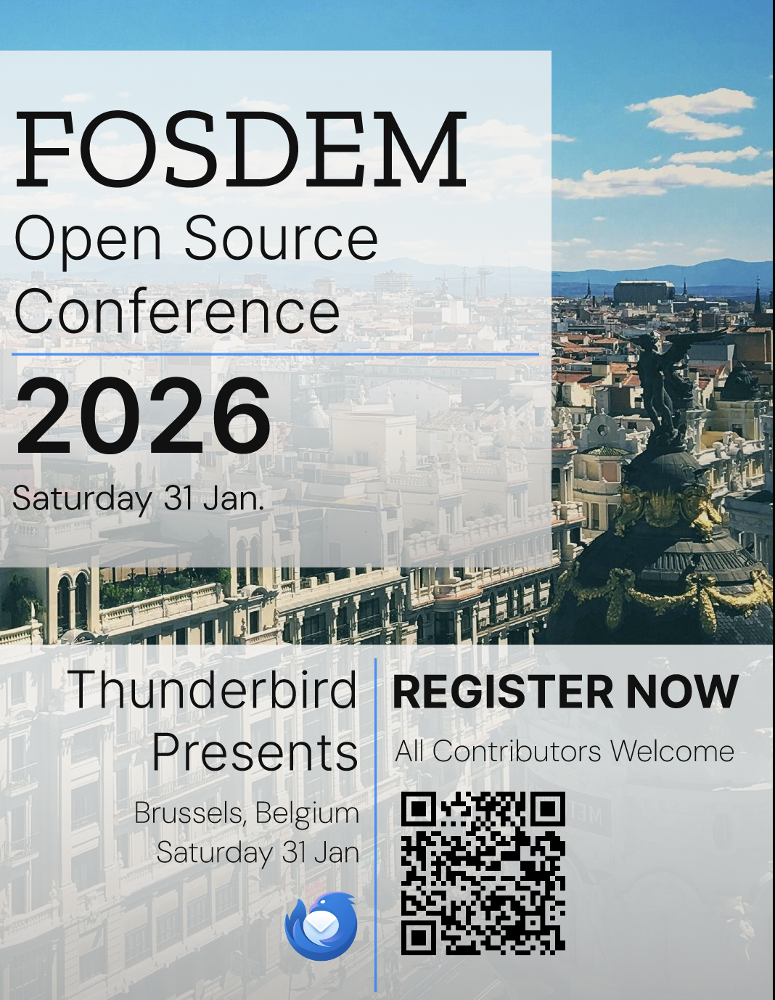

Thunderbird Design Suite: FOSDEM 2026
A portfolio design suite created through an accessibility and UX lens, exploring promotional assets for the 2026 FOSDEM conference —including flyer and postcard concepts— that prioritize inclusive design, clear hierarchy, and user-focused communication. These designs experiment with event messaging and visual hierarchy to support open-source community engagement while demonstrating accessibility-aware UI composition.
The following assets align with Mozilla Thunderbird’s branding and design evolution, drawing from its open-source heritage and modern UI principles to emphasize readable typography, clear information hierarchy, and accessibility-aware communication. The suite explores how event promotional materials can reflect Thunderbird’s user-first philosophy while maintaining visual cohesion and usability across diverse audiences. Thoughtful design decisions in these assets demonstrate how Thunderbird-inspired event messaging can balance aesthetic clarity with accessibility and inclusive UX principles.

FOSDEM 2026 – Thunderbird Flyer Concept
A concept design suite created through an accessibility and UX lens for Thunderbird’s participation in the 2026 FOSDEM conference, exploring promotional materials that balance clarity, hierarchy, and open-source community values. The color palette uses Thunderbird Blue as a subtle accent to evoke trust and forward momentum, while typography relies on Zilla Slab for strong headlines, Inter for clean secondary structure that maintains readability at a smaller text, and DM Sans for modern body copy. Text is set in #111111 instead of pure black to reduce visual harshness and improve comfort, while a soft gradient behind content increases readability and hierarchy by reducing eye strain on busy photographic backgrounds.
The background imagery features Brussels architecture beneath an open blue sky, drawing inspiration from Thunderbird and its associations with trust, reliability, and forward-looking opportunity—symbolizing openness and future-oriented communication. Hundreds of buildings symbolize the global open-source community, representing diverse contributors and perspectives that reflect the collaborative principles of software ecosystems. Subtle overlays and controlled opacity allow the imagery to support the message without competing with textual hierarchy, reducing cognitive load and promoting a calm, readable composition.
Design decisions prioritize accessibility and user-focused communication: clear structure, breathable spacing, and visual cues that guide attention while maintaining aesthetic cohesion. The suite demonstrates how event marketing materials can align with modern UI/UX principles, open-source values, and inclusive design practices—communicating information effectively to diverse audiences without sacrificing usability or visual intent.
Photo (2/24/26): Architectural photography of metropolis under stratus clouds by Abhishek Verma via Pexels (https://www.pexels.com/photo/architectural-photography-of-metropolis-under-stratus-clouds-670261/). Used under Pexels license with design modifications and overlays applied for portfolio concept purposes.